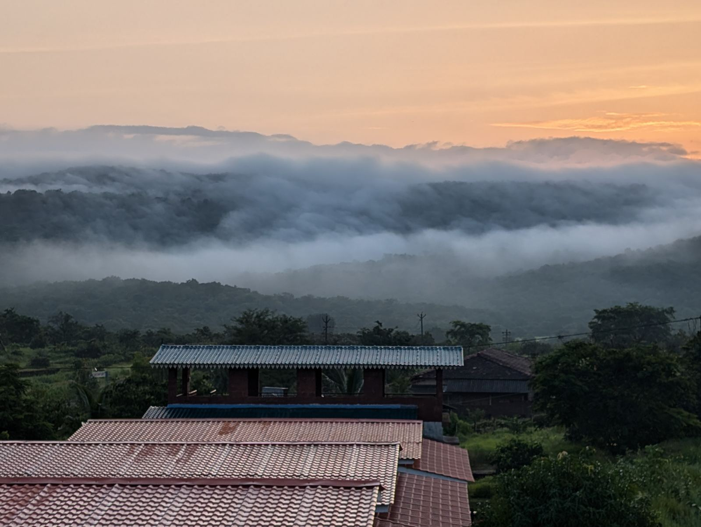

Dapoli
A beach town and a hill station in the same place. Plateau above, nine beaches below, and around thirty sightseeing spots inside the taluka.

Where Dapoli sits
Dapoli is a taluka headquarters in the north of Ratnagiri district. The town is inland on a plateau, which keeps it noticeably cooler than the coast in April and May, while the beaches are a short drive downhill along about forty kilometres of coastline.
- District
- Ratnagiri, Maharashtra
- From Mumbai
- Approx 230 km
- From Pune
- Approx 215 km
- Nearest railway
- Khed on the Konkan Railway, approx 40 km
- Nearest beach to us
- Kolthare, about 9 km from the project
- Main season
- October to May. Mango season March to May
What the town has
Dapoli is a working town, not a resort strip, and that is exactly what makes owning a home here work for the long term.
Food worth the drive
Fish landed that morning, Alphonso and cashew in season, solkadhi, modaks and jackfruit. Food tourism is a genuine reason people come back.
Healthcare and schools
A sub-district hospital and private clinics in town, schools nearby, and larger hospitals at Chiplun and Ratnagiri within reach.
The agricultural university
Dr Balasaheb Sawant Konkan Krishi Vidyapeeth is based here and shapes the local mango and cashew economy.
Around thirty places to see
Enough that a family coming down four or five times a year still finds something new on every trip.
Common questions
Where is Dapoli?
Dapoli is a taluka town in Ratnagiri district on the Konkan coast of Maharashtra, roughly 230 km from Mumbai and 215 km from Pune. It sits on a plateau, which keeps it cooler than the coast and is why it is often called a hill station in Konkan.
What is Dapoli known for?
Beaches at Kolthare, Karde, Ladghar, Murud and Anjarle, the Harnai fish auction and its sea forts, the hot springs at Unhavare, and around thirty sightseeing spots in the taluka. It is also an Alphonso mango and cashew belt, and home to the Konkan agricultural university.
Is Dapoli good for food?
It is one of the reasons people keep coming back. Fresh fish, Alphonso mango in season, cashew, solkadhi, modaks and jackfruit are all local rather than brought in for tourists.
When is the best time to visit Dapoli?
October to May is the main season, with March to May being Alphonso time. The monsoon between June and September turns the whole plateau green and is spectacular in its own right.
Looking at land in Dapoli?
1000 Trees is a 74-plot NA project near Dapoli with water, power and over a thousand trees already in place. See the project.